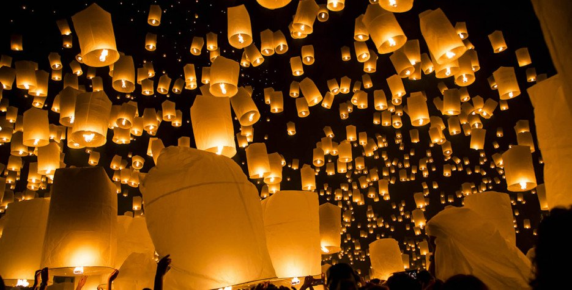
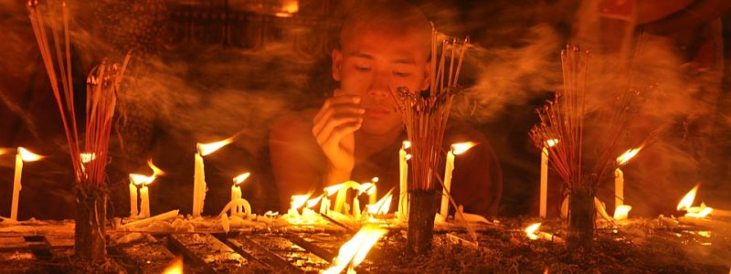

Ever year, In order to pay back the gratitude to his mother, Buddha preached Abhidhamma to his mother for one and a half day(It takes three Lenten months for human).Thadingyut lighting festival of Myanmar is on the full moon in Thadingyut, the 7th month on the Burmese calendar, usually in October, marking the end of Buddhist lent. Thadingyut is held over 3 days, beginning on the day before the full moon and lasting until the day following the full moon.
It is common for Buddhists to go to pagodas and monasteries to pay their respects to monks and offer food. The annual event is also an opportunity for the young to pay respect and give thanks to their elders especially parents, teachers, and elderly relatives. They ask for forgiveness for wrongdoings committed during the year and often receive pocket money in return. Everyone put lanterns and candles in front of the houses.Travelers in Myanmar for either of these annual festivities will see the country aglow as home, temples, and streets are adorned with bright lights.People also go on vacation during the holidays.
Myanmar's magical light festival can be enjoyed across the country. Travelers who wish to see the biggest and brightest events should consider visiting the Shwedagon Pagoda in Yangon.
This is our about page. We put a brief about what Thadingyut Festival is and what we mostly do on the holidays. All the pictures and videos are giving copy right to the original owner. This is written by Ei Phyu Phyu Thant, Aung Bhone Chaint, Min Thaw Khant and Khin Zar Ni Aung.